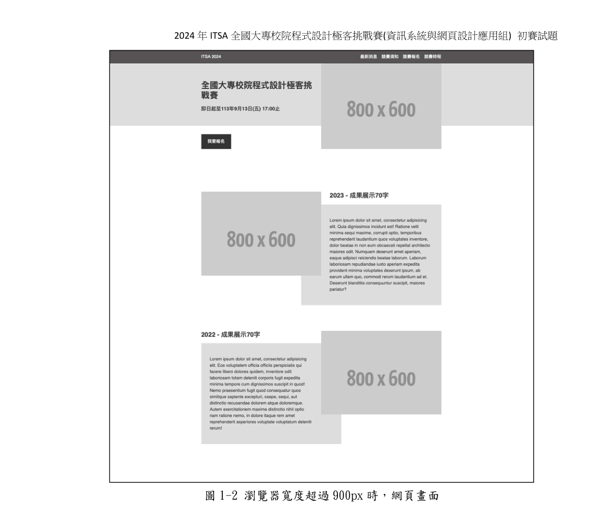
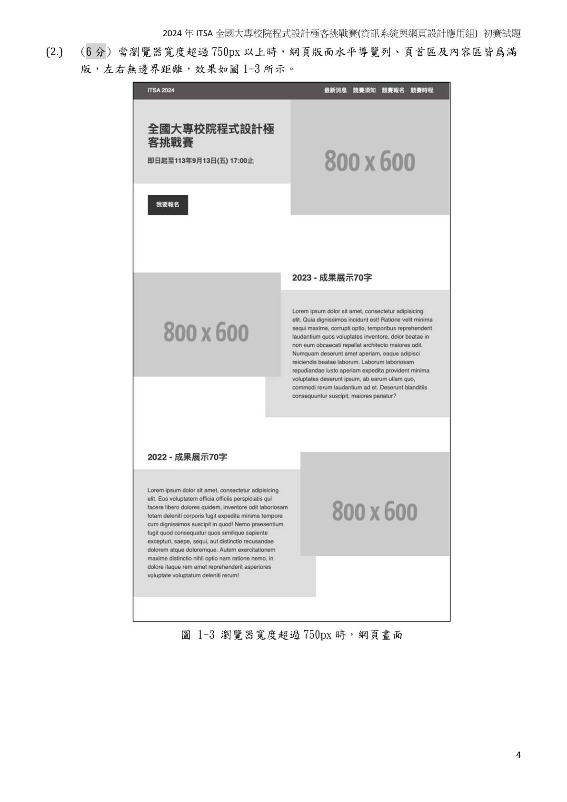
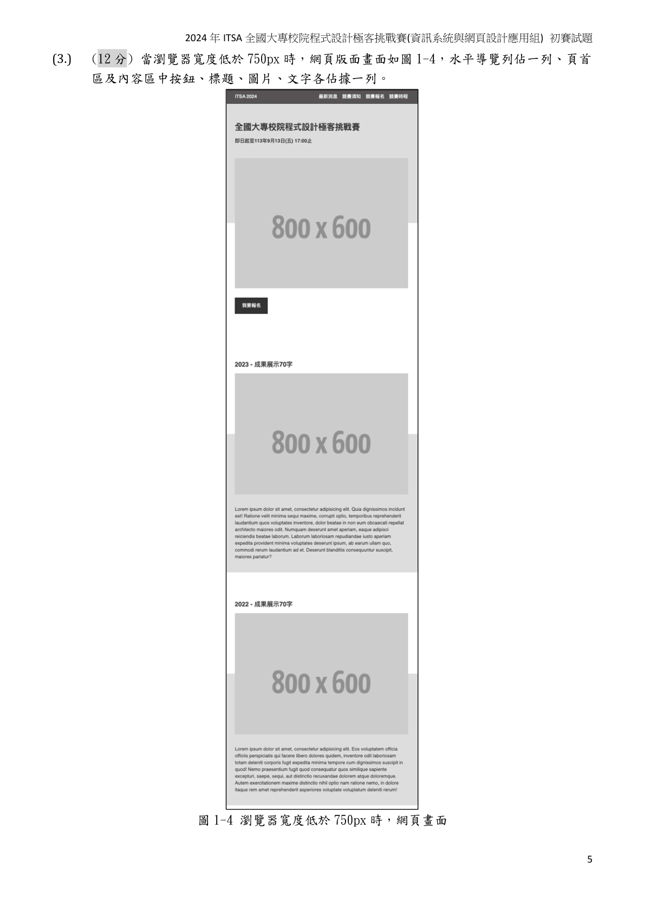

目標：讓不會前端的學生也能完成比賽題
教學核心：題目拆解步驟 = 簡報播放順序
每張投影片只教一件事：先看需求，再做最小可行版本。
每個題目都走同一套路：版面 -> 互動 -> 資料 -> 驗收。
每段都有可交作業點：避免最後 20 分鐘才發現不能交。
老師操作：一頁講解 + 一頁示範 + 一頁學生跟做
2024：RWD 切版、前端 CRUD、PHP + MySQL 系統
2025：計算機、聊天框、RWD 登入、產品管理系統
共同能力：HTML/CSS、JavaScript 事件、表單、CRUD 思維
結論：不是要會很多框架，而是要會「拆題與交付順序」。
把題目轉成待辦清單，格式固定：
[分數] [功能] [驗收條件] [檔名]
新手常錯：直接寫程式，卻漏掉「命名規則」和「上傳路徑」。
先做可見結構：
header / nav / main / section / footer
先不美化，先讓評審「看得見你有做」。
固定做法：
桌機版完成 -> @media (max-width: 900/768/750px)
每做完一段就縮放瀏覽器檢查。
題目 1：RWD 首頁、題目 2：圖書 CRUD、題目 3：健康度量系統
教學提示：這題是 RWD 基礎總複習。

講解重點：導覽列、頁首與兩列圖片文字交疊版型。

講解重點：瀏覽器寬度超過 750px，版面改為滿版。

講解重點：瀏覽器寬度低於 750px，切成單欄堆疊。
最小可行版本順序：
新增書籍 -> 顯示列表 -> 刪除 -> 更新
用陣列暫存資料即可，不要一開始就追求複雜 UI。
本頁完成目標：畫面上要看得到「輸入區 + 列表區」。
學生跟做：建立 form、三個輸入欄位、一個新增按鈕、一個列表容器。
本頁完成目標：按下新增，列表會出現新書。
老師口令：「資料先進陣列，再呼叫 render() 重畫列表」。
{ title, author, year }。本頁完成目標：每筆資料旁都有刪除按鈕，按下可移除。
老師口令：「按鈕帶 index，刪完就重畫。」
刪除 按鈕。books.splice(index, 1)。render()。本頁完成目標：點更新後可改書名/作者/年份並存回列表。
建議作法：先把資料帶回輸入欄，再按「儲存更新」。
editingIndex 記錄目前編輯哪一筆。editingIndex 重設為 -1。3 分鐘驗收清單：
新增 1 筆 -> 再新增 1 筆 -> 刪掉第 1 筆 -> 更新剩下那筆
team021.html）。這 5 頁做完，題二基本分就穩了。
const books = [];
let editingIndex = -1;
function render() {
// 1. 清空列表容器
// 2. books.forEach(...) 產生每筆資料 + 刪除/更新按鈕
}
function submitBook() {
const book = readForm(); // { title, author, year }
if (!book.title || !book.author || !book.year) return;
if (editingIndex === -1) books.push(book);
else books[editingIndex] = book;
editingIndex = -1;
clearForm();
render();
}
function removeBook(index) { books.splice(index, 1); render(); }
function editBook(index) { fillForm(books[index]); editingIndex = index; }
講法：先講資料流（讀表單 -> 改陣列 -> render），再補每個函式內容。
難點在「流程完整」，不是單一頁面漂亮。
題目 1：計算機、題目 2：聊天框、題目 3：RWD 登入、題目 4：產品管理
= 計算（先基本四則，再先乘除後加減）。C 清空。jpg/jpeg/png、<= 5MB。重點：事件與條件判斷，不需要真的串 AI。
<768px 側邊欄隱藏。第 1 段（20 分） 題目翻譯成 TODO + 評分對照表
第 2 段（35 分） 版面骨架與 RWD
第 3 段（35 分） JS 互動與 CRUD
第 4 段（20 分） 測試、截圖、命名、打包
每段結尾都要有「可提交版本」。
這樣學生即使不熟前端，也能穩定拿到基本分。
你現在可以直接拿這份簡報去上第一堂課。